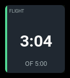
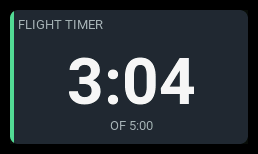

flight-timer
| 1x2 | 2x1 | 2x2 |
|---|---|---|
 |
 |
Shows one of the radio's own model timers.
Settings
| Key | Type | Default | Values | What it does |
|---|---|---|---|---|
timer |
number | 0 |
0–2 |
Which model timer, counting from zero. |
label |
string | (empty) | any text | The panel's heading. Empty means derive it: the timer's own configured name, or TIMER n if it has none. |
accent |
string | cyan |
cyan, green, amber, orange |
The stripe down the left edge. |
warning |
number | — | seconds | Go amber at this many seconds. |
critical |
number | — | seconds | Go red at this many seconds. |
There is deliberately no direction setting: EdgeTX already says whether a timer counts up or down, and the panel reads that rather than restating it.
warning and critical are compared in the direction the timer runs. A
countdown becomes critical at or below the threshold — it is running out. A
count-up timer becomes critical at or above it — it has run long. You give
the same number either way and the panel applies it the right way round.
Behavior
The panel displays an EdgeTX model timer. Configure its name, start value, activation mode or switch, and elapsed/remaining display in Model Setup → Timers on the radio.
Select that timer with the panel's timer setting: 0 is Timer 1, 1 is
Timer 2, and 2 is Timer 3. The panel follows the timer's configured display.
Set warning and critical in the panel configuration to color the panel
at the desired time thresholds.
States
| State | When | What you see |
|---|---|---|
normal |
anything not below | the clock, no badge |
warning |
past warning, in the timer's own direction |
amber tint, WARN badge |
critical |
past critical, or a countdown past zero |
red tint, CRIT badge |
unavailable |
the timer is not configured | --:-- and an N/A badge |
A countdown past zero is always critical, whatever the thresholds say. It is the state most easily mistaken for a healthy timer — EdgeTX keeps counting into negative numbers — so the panel shows a minus sign, turns red and says so in words.
Examples
A single cell. The clock and nothing else — no supporting row at this span, so a countdown past zero shows only its minus sign and badge.
- id: flight
type: flight-timer
col: 0
row: 0
colSpan: 1
rowSpan: 1
config:
timer: 0
label: FLIGHT
Two cells square, which is where everything appears: the largest clock, the supporting row and the progress bar. Amber at a minute left, red at twenty seconds.
- id: glide
type: flight-timer
col: 0
row: 0
colSpan: 2
rowSpan: 2
config:
timer: 1
accent: green
warning: 60
critical: 20
No label, so the heading is the timer's own configured name.
A wide single row following the timer's configured display.
- id: airborne
type: flight-timer
col: 0
row: 0
colSpan: 4
rowSpan: 1
config:
timer: 0
label: AIRBORNE